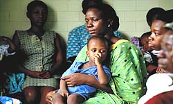

EAST AFRICA:
Feature - Traditional culture spreading HIV/AIDS[This report does not necessarily reflect the views of the United Nations] ARUSHA, 28 Mar 2003 (IRIN) - Elements of traditional culture and subservient female roles in Kenya, Uganda and Tanzania are pushing HIV/AIDS infection rates up to unprecedented levels, experts said this week. In Tanzania, as is generally the case for sub-Saharan Africa, there are about 1.5 women for every male victim of HIV/AIDS, Leoni Msimbe, a director from Tanzania's Ministry of Community Development, Gender and Children in Tanzania, told a workshop in Arusha, Tanzania. While this proportion may be somewhat exaggerated by the fact that more data is available on women due to routine antenatal tests, it is widely accepted that women and young girls are increasingly vulnerable to infection. Hilde Basstanie of UNAIDS said that girls between 15 and 19 in the region were now six times more likely to be HIV-positive than boys in the same age bracket, often as a result of rape, coercion or sex with older men. While biology plays a significant role in the high rates of transmission (females are twice as likely as males to be infected during unprotected sex), man-made socio-political factors are adding plenty of fuel to the fire. UNEQUAL STATUS Patriarchal culture in the region has heavily influenced the legal systems, governance structures and value systems that uphold the unequal status of girls and women. A number of commonly observed traditional practices are now recognised as being directly responsible for the spread of HIV/AIDS. Widow inheritance, widow "cleansing", wife sharing, wife exchanging with land or cattle, and polygamy are some of the key ones, which are stacked against women's health because the parties involved do not test for HIV. Female and male circumcision are still practised in the traditional way, using the same knives or blades. In the case of females, circumcision can also lead to bleeding during sex. Aside from these traditional practices are the social norms which dictate that females defer to males. "Male youth have been cultured to believe it is a sign of manhood to be able to control relationships. Females are brought up to believe that males are superior in all spheres of life and should be the masters of sexual relationships," said Ambrose Rachier of the Kenya Ethical and Legal Network. "The rigid implementation of traditional practices such as dowry payments make women men's property," he noted. SEXUAL SUBSERVIENCE While men are encouraged to be promiscuous - including within marriage - women are often expected to remain "pure". Furthermore, low levels of education among girls and women, due to being pulled out of school early to perform household duties or care for sick relatives, mean they cannot access HIV information. "Young women are kept ignorant about sex - this is viewed as a sign of innocence," said Dr Patrick Orege, Deputy Director of the National AIDS Control Council (NACC) in Kenya. This in turn makes them totally unprepared for sexual relations, and equally unable to negotiate for safe sex. "Women are at risk because of a lack of power to determine when, where and whether sex takes place," added Paul Bukuluki of UNESCO. There is growing evidence that a large number of new cases of infection is due to violence in homes, schools, the workplace and other social centres, such as churches or while collecting water. USE OF CONDOMS Female condoms have been found to be inappropriate and inadequate in the context and culture of East Africa, and have been largely unsuccessful in providing protection for women. The Ugandan Ministry of Health purchased 1.2 million female condoms but found that women were not familiar enough with their anatomies to use them, said Vashta Kibirige of the Ugandan Ministry of Health. "Culturally, women are brought up not to touch any of their private parts." The condoms were also beyond the reach of most women, costing up to 10 times as much as the male condom. Aside from both men and women's reluctance to wear condoms within the context of marriage, in cultures where the value of women is dependent on their ability to reproduce, they are compelled to have unprotected sex, placing themselves and their babies at risk. Up to 80 percent of infections among women occurred in "stable relationships" where the man had become infected elsewhere, Orege of the Kenyan National AIDS Control Council pointed out. Indeed, one of the key findings of the Arusha workshop was that sex workers were often better able to protect themselves than housewives because they were more empowered to insist on safe sex. POVERTY AND STIGMA Widespread poverty and unemployment compound the status quo by forcing women and girls to engage in risky sex with all sort of people, including their partners and husbands. Most women who are HIV positive are poor and are rejected by their husbands and families, and therefore cannot afford medicine. In some cases women are forced to take HIV tests by their husbands or families, sometimes without their knowledge, and are then rejected. Flavia Kyomukama of Uganda's National Community of Women Living with HIV/AIDS said her husband had rejected her after 12 years of marriage, and forcibly separated her from her children. "My case was assigned to a lady at the Human Rights Commission in Kampala. She, without my consent, closed my file because she was under pressure from my husband's friends to save my husband's dignity and job." "My husband took all our savings and investments," she added. Inadequate and corrupt legal systems in the region, and a lack of political will to "interfere" in family matters mean that women often lose everything they own. "HIV and poverty are mutually reinforcing - HIV pushes people into poverty," said Uganda's Minister of Gender, Labour and Social Development, Zoe Bakoko-Bakoru. Similarly, poverty places people at the mercy of HIV by forcing them to take risks. WAY FORWARD While Kenya, Tanzania and Uganda all have national frameworks to deal with HIV/AIDS, there is a consensus that more needs to be done to prioritise women's issues. "My gut feeling is that we haven't done enough when it comes to implementing gender balance," said Herman Lupogo of Tanzania's Commission for AIDS. Bills that are drafted tend not to adequately address women's issues - such as the Kenya National Strategy on HIV/AIDS - which have to be added later on as an "afterthought". Experts say more needs to be done to protect women's rights by legalising the sex industry, criminalising marital rape and wilful infection, and imposing heavier penalties on rapists. In addition, laws protecting human rights need to be harmonised to ensure basic protection. In Kenya - in the field of family and land laws - Islamic law, Hindu law, customary and statutory laws were "all working against each other," Rachier told IRIN. Yet, the political will for change is lacking. Bills that might improve women's lot are not being passed or even debated because a male dominated parliament simply wouldn't accept them, Rachier said. In the areas of polygamy, FGM, wife inheritance and wife sharing, which are "widespread and deeply rooted", he said it was not possible to introduce legislation in Kenya. "A sizeable proportion of the Kenyan population is poligamously married. We therefore did not think it prudent to declare such unions either in the present or in the future illegal," he said. COMMUNITY INVOLVEMENT This week, the three countries' National AIDS Councils/Commissions, UN agencies, NGOs and people living with HIV/AIDS issued a statement saying that "the centrality of culture" must be addressed more rigorously in each of the countries, recognising that culture "needs to transform" if the pandemic is to be halted. They also agreed to strengthen gender and HIV/AIDS policies and to share best practices between the three countries. The consensus is that community-based education, which includes cultural and traditional leaders, is the only means to secure behavioural change. But with so many different communities and languages in each of the countries, initiatives needs to be tailor-made to each area. Therein lies the challenge, which without adequate resources is impossible to achieve. Meanwhile, and for as long as the status quo remains, more and more women and girls will continue to lose their lives. [ENDS] |
http://www.cirp.org/news/irinnews03-28-03/